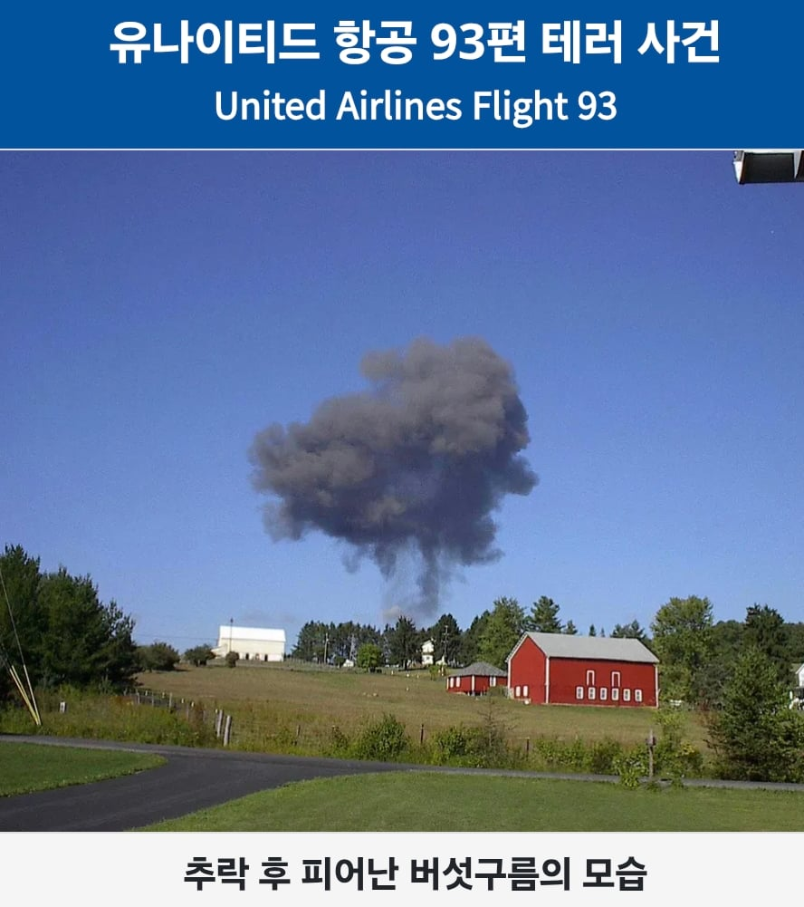

모두가 아는 911 테러 당시 항공기 자살테러는 총 네 대의 비행기를 이용한 자살테러가 계획되어있었는데,
1. 쌍둥이 빌딩에 2대
2. 펜타곤에 1대
3.워싱턴에 1대
이렇게 계획이 되어있었다.
지하드 사미르 자라(향년 26세 사망)
زياد الجراح
Ziad Samir Jarrah
이새끼는 네대의 비행기 테러 계획중 워싱턴으로 가는 비행기를 납치하는 임무를 맡은 행동대장이었는데,
희한하게 레바논 베이루트의 존나 부잣집에서 태어나서 잘먹고 잘살다가 어느날 패권국가들이 중동에 하는 짓을 보고 분노를 느껴 알카에다에 가입한 이상한새끼였다.
어쨌든 지하드는 알카에다 부하들과 함께 계획대로 원래 도착지가 샌프란시스코였던 '유나이티드 항공 93편'의 조종실로 침입해서 기장과 부기장을 살해한뒤,
비행기를 탈취하는데 성공하고 비행기를 워싱턴으로 몰기 시작했다.(오전 9시 28분)
지하드는 갑자기 항로가 바껴서 의문을 품을 승객들을 기만하기 위해 기장인척하고 안내방송을 흘리는등 기만술까지 폈다. (오전 9시 31분 첫번째 방송, 오전 9시 39분 두번째 안내방송)
"Ladies and gentlemen: here... the captain. Please sit down, keep remaining seating. We have a bomb on board. So sit."
"승객 여러분, 여긴... 기장입니다. 착석 부탁드립니다. 계속 앉으세요. 비행기 안에 폭탄이 설치되었습니다. 그러니 앉으세요."
"Hi, this is the captain. I would like to order you to remain seated. There's bomb aboard, and we are going back to the airport, and we have our demands. So please remain quiet."
"아, 기장입니다. 계속 앉아 계시기 바랍니다. 비행기에 폭탄이 설치되어 있습니다. 그리고 저흰 공항에 돌아가서 저희 요구 사항을 밝힐 것이니 조용히 있어주십시오.. "
그러나 조종실 제압에 동요한 승무원 3명과 승객 10명이 기내 전화와 휴대폰을 이용하여 가족 등의 관계자에게 비행기가 납치되었다는것을 전했는데, 그 통화에서 이미 세계무역센터에 테러가 일어났으며 해당 비행기도 그 대상이 되었다는것을 알게된다.
토드 모건 비머 Todd Morgan Beamer(향년 32세 사망)
그러자 당시 오라클 현장 마케딩 담당자로 일하며 소니(sony)와 미팅을 가진뒤 귀환하던 토드 모건 비머(Todd Morgan Beamer)를 비롯한 승객 십여명은 비행기를 되찾자고 의기투합하게되고
"Are you guys ready? Okay. Let's roll!"
오전 9시 57분 경, 토드 비머의 말을 시작으로 승객들은 끓인 뜨거운물, 비상탈출용 도끼, 식기등을 들고 조종실로 돌격해서 테러범들과 난투극을 벌이게 된다.
(영화:플라이트 93)
갑작스런 승객들의 저항에 당황한 테러리스트들은 비행기를 이리저리 흔들며 승객들을 방해했지만
끝내는 목적지인 워싱턴에 다다르지 못할것을 깨닫고는 비행기를 고의로 추락시키고 만다.

(93편 승객들을 위한 추모비 '목소리의 탑')
결국 93편 비행기 테러는 승객들의 희생으로 유일하게 실패한 테러가 되었으며, 미 행정부는 미국 전역의 법의학자들을 총동원해서 승객전원의 유해를 최대한 수습하여 유족들에게 전해주고 위령비와 추모공간을 만들었다.
그 이후 사고수습 과정에서 토드 비머가 했던 "Are you guys ready? Okay. Let's roll!"이 대중들에게 알려지게 되면서 , Let's roll이라는 표현자체는 원래 존재했으나
이후 대중매체에서 훨씬 많이 쓰이게 되는 계기가 되었다.
딱히 쓸 단어가 없다 '사망 당시 xx살'이라고 풀어쓰는 것 밖에